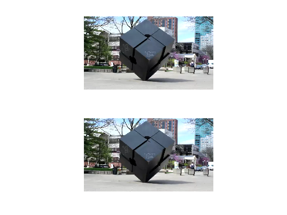

Lucas-Kanade Method Example 1
This example uses Lucas-Kanade method on two images and calculate the optical flow field.
Contents
Load Frames
clear all; load MCube_frames figure(); subplot 211 imshow(fr1); im1t = im2double(rgb2gray(fr1)); im1 = imresize(im1t, 0.5); % downsize to half subplot 212 imshow(fr2); im2t = im2double(rgb2gray(fr2)); im2 = imresize(im2t, 0.5); % downsize to half
Implementing Lucas Kanade Method
ww = 45; w = round(ww/2); % Lucas Kanade Here % for each point, calculate I_x, I_y, I_t Ix_m = conv2(im1,[-1 1; -1 1], 'valid'); % partial on x Iy_m = conv2(im1, [-1 -1; 1 1], 'valid'); % partial on y It_m = conv2(im1, ones(2), 'valid') + conv2(im2, -ones(2), 'valid'); % partial on t u = zeros(size(im1)); v = zeros(size(im2)); % within window ww * ww for i = w+1:size(Ix_m,1)-w for j = w+1:size(Ix_m,2)-w Ix = Ix_m(i-w:i+w, j-w:j+w); Iy = Iy_m(i-w:i+w, j-w:j+w); It = It_m(i-w:i+w, j-w:j+w); Ix = Ix(:); Iy = Iy(:); b = -It(:); % get b here A = [Ix Iy]; % get A here nu = pinv(A)*b; % get velocity here u(i,j)=nu(1); v(i,j)=nu(2); end; end; % downsize u and v u_deci = u(1:10:end, 1:10:end); v_deci = v(1:10:end, 1:10:end); % get coordinate for u and v in the original frame [m, n] = size(im1t); [X,Y] = meshgrid(1:n, 1:m); X_deci = X(1:20:end, 1:20:end); Y_deci = Y(1:20:end, 1:20:end);
Plot optical flow field
figure(); imshow(fr2); hold on; % draw the velocity vectors quiver(X_deci, Y_deci, u_deci,v_deci, 'y')